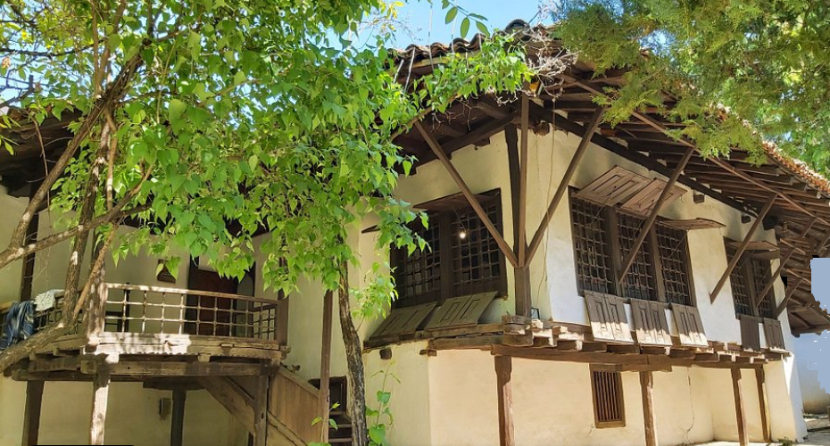

СÑеван СÑ. ÐокÑаÑаÑ: ÐванаеÑÑа Ð ÑковeÑ (1906)
Stevan St. Mokranjac: Douzième Guirlande (1906)
"ÐеÑме ca Kocoвa - Chants de Kosovo"

ÐÑногÑаÑÑки мÑÐ·ÐµÑ y ÐÑиÑÑини - Musée ethnographique de PriÅ¡tina
|
|
|
|
Ðезе ка пеÑмама 1 - 5 -oOo- Liens vers les chants 1 - 5

ÐванаеÑÑа Ð ÑковeÑ
Ðзводи Ð¥Ð¾Ñ Ð Ð¢Ð-а ÐеогÑад. ÐиÑигенÑ: Ðладен ÐагÑÑÑ (маÑоÑ)
Ð¥Ð¾Ñ Ð Ð°Ð´Ð¸Ð¾-ÑелевизиÑе ÐеогÑад Ñед. Ðладен ÐагÑÑÑ (1. маÑ)
NOTE
|
12. Ð ÑÐºÐ¾Ð²ÐµÑ Ñе лиÑÑког каÑакÑеÑа. ÐаÑлепÑи део Ñе ÑеÑвÑÑа пеÑма âЦвекÑе ÑаÑналоâ, коÑа одÑÑевÑава лепоÑом мелодиÑе и Ñ Ð°ÑмониÑе. ÐÑеÑÑ Ð¾Ð´Ðµ joj пеÑме: âÐека Ñи билаâ, âÐман, ÑеÑнала Ñиâ и âÐа лâ немам, ÑанÑмâ. ÐакÑÑÑак Ñе веÑела пеÑма âСеди ми мома на пенÑеÑÑâ. Izvor: Ðикипедиjа |
La 12ème Guirlande est essentiellement lyrique. La partie la plus remarquable est le quatrième chant "Cvekje cafnalo", impressionnant de beauté, tant par sa ligne mélodique que par son harmonisation. Il est précédé des chants: "Deka si bila", "Aman, šetnala si" et "Da l' nemam, džanum". La rhapsodie se conclut par le chant joyeux "Sedi mi moma na pendžeru". Source: Wikipédia |